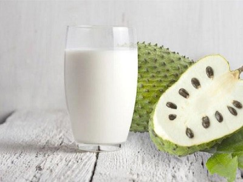

|  |
Smoothie name: Soursop smoothie▸ Ingredients:
▸ Time to prepare: 25 minutes ▸ Approx quantity: 1 large-size cup |
▸ How to make smoothies:
- Soursop removes the green skin, cut into 4-5 pieces, remove the seeds, then put in a blender.
- Add fresh milk, condensed milk, and ice cubes to the blender and blend until smooth, then stop, pour into a cup to drink every day.
▸ Calories and related information: